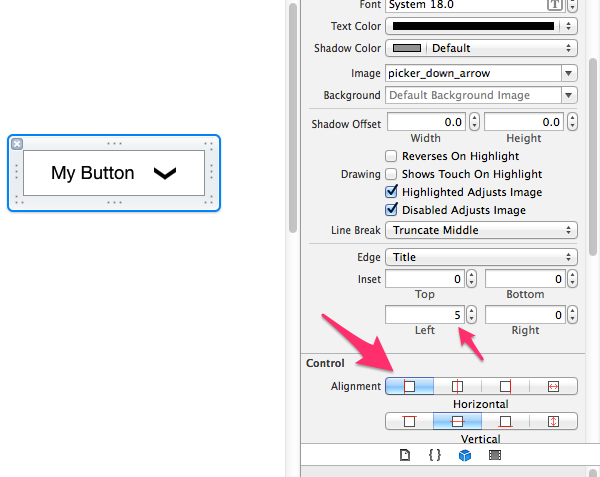
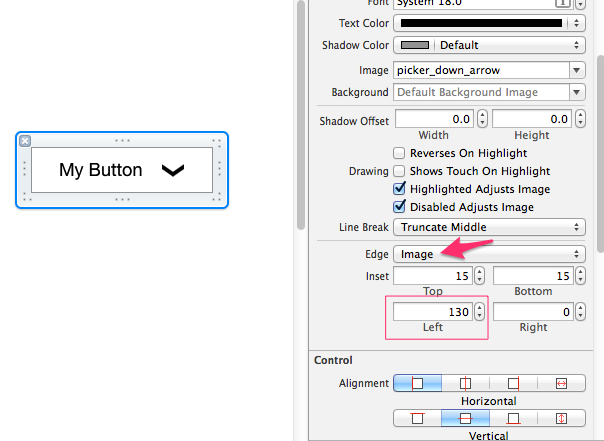

How can I set the title of a UIButton as left-aligned?
I need to display an email address on the left side of a UIButton, but it is
being positioned to the centre.
Is there any way to set the alignment to the left side of a UIButton?
This is my current code:
UIButton* emailBtn = [[UIButton alloc] initWithFrame:CGRectMake(5,30,250,height+15)]; emailBtn.backgroundColor = [UIColor clearColor]; [emailBtn setTitle:obj2.customerEmail forState:UIControlStateNormal]; emailBtn.titleLabel.font = [UIFont systemFontOfSize:12.5]; [emailBtn setTitleColor:[[[UIColor alloc]initWithRed:0.121 green:0.472 blue:0.823 alpha:1]autorelease] forState:UIControlStateNormal]; [emailBtn addTarget:self action:@selector(emailAction:) forControlEvents:UIControlEventTouchUpInside]; [elementView addSubview:emailBtn]; [emailBtn release];
Answer
Set the contentHorizontalAlignment:
// Swift emailBtn.contentHorizontalAlignment = .left; // Objective-C emailBtn.contentHorizontalAlignment = UIControlContentHorizontalAlignmentLeft;
You might also want to adjust the content left inset otherwise the text will touch the left border:
// Swift 3 and up: emailBtn.contentEdgeInsets = UIEdgeInsets(top: 0, left: 10, bottom: 0, right: 0); // Objective-C emailBtn.contentEdgeInsets = UIEdgeInsetsMake(0, 10, 0, 0);
Suggest
You can also use interface builder if you don't want to make the adjustments in code. Here I left align the text and also indent it some:

Don't forget you can also align an image in the button too.:
